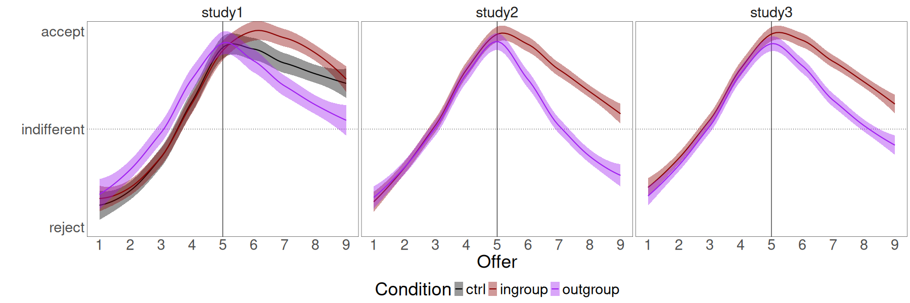
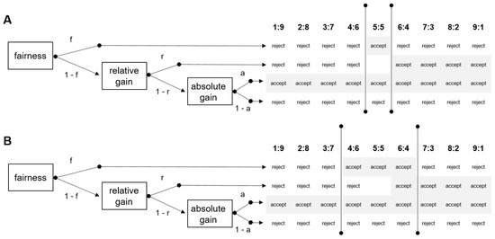
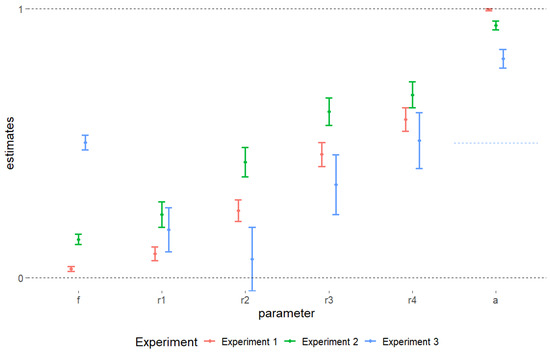

Decision-making
No decision is take in isolation
Every time we make a decision, we have to resolve a tradeoff. Do we maximize our gain or do we strive for fainress? Do we take the risk to get more or do we take the safe option even if it's worth less?
All these tradeoffs not resolved in a vacum, but in a socially embedded frame. Social norms inevitably affect the final decision, and social information are rarely left out of the picture.

In the plot above, you can see data from Biella & Sacchi (2018). People had to decide whether to accept or reject a proposal on the behalf of a receiver in multiple rounds of the Ultimatum Game.
Receivers belonged to the decision-maker's ingroup or to the outgroup established with a minimal group paradigm. Unsurprisingly, the behavior of both condition was unaffected by the group membership when proposals were unfair and disadvantageous. But when the proposals were unfair and advantageous, participants deciding for an outgroup memeber enforced fairness norm while those participants deciding for an ingroup memeber maximized their fellow group memeber's utility.
In both cases, decision-makers had to resolve a tradeoff between fairness and utility maximization and they used social information to select which of the two drivers should lead the decision.
This paper holds a special place in my heart as it is based on my MSc. thesis, it is my first paper ever, and it received the Best Paper Award 2019 from the Italian Association of Psychology.

The diagram above comes from Biella, Hennig & Oswald (2025) and shows two models explaining the observed data in various version of the ultimatum game. People had to decide whether to accept or reject a proposal for themselvers (red bars in the plot), on the behalf of an unknown receiver (green bars in the plot), or as a "fair judge" (blue bars in the plot) in multiple rounds of the Ultimatum Game.
Three processes govern the decision. Fairness (f), relative gain maximization (r1, r2, r3, r4), and absolute gain maximization (a). All processes lead to theoretically determined predictions, they are all active simultaneously, and each parameter is estimated using Multinomial Processing Trees (MPT) models. Model A assumes that only a perfect 50-50 offer is fair, while Model B extends the boundaries of fairness to the nearest uneven offers. As Model B fits the data significantly better, our paper shows that the boundaries of fairness are more flexible than previously thought and can be located a little bit further from a perfect 50-50 offer.

As the plot show, fairness is relatively less important when the participants receive the utility of their decision (red bar from study 1) than when the utility is received by a third person. However, fairness becomes extremely important when decision-makers are aasked to decide as "fair judges", when they are asked to completely ignore utility.
Socially Embedded Decision-Making
In short, my research shows that decisions are rarely taken in isolation. Social information is always part of the equation. Social norms guides the behavior but the can be bent if the decision frame allows for it. And fairness is not set in stone. It is a construct that is lesss rigid than previously thought.
Related Publications
Biella, M., Hennig, M., & Oswald, L. (2025). Investigating the Social Boundaries of Fairness by Modeling Ultimatum Game Responders’ Decisions with Multinomial Processing Tree Models. Games.
Biella, M., Rebholz, T., Holthausen, M., & Hütter, M. (2023). The Interaction Game: Development and Validation of an Experimental Paradigm for Manipulating Social Distance. Journal of Applied Social Psychology.
Biella, M., & Sacchi, S. (2018). Not fair but acceptable... for us! Group membership influences the tradeoff between equality and utility in the ultimatum game. Journal of Experimental Social Psychology.